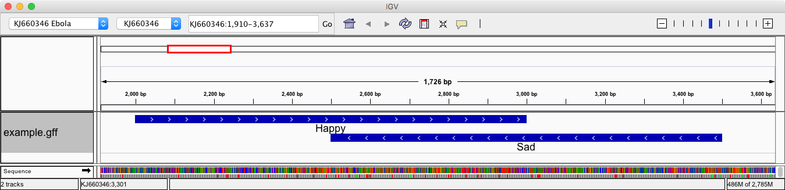

{% extends "unitbase.html" %}
{% load pytags %}
{% load handbook %}
{# title = Genome Arithmetic #}
{# subtitle = set theory applied to genomics #}
{# name = Operating on genomic intervals #}
{% block body %}
{% markdown %}
Let's start with a simple interval
KJ660346 lecture CDS 2000 3000 . + . gene=Happy; protein_id=HAP
KJ660346 lecture CDS 2500 3500 . - . gene=Sad; protein_id=SAD
Will produce the following:

- - -
### Extend intervals with `slop`
Extend the intervals by 10 bases on one side and 100bp on the other.
To do that `bedtools` needs to know how big the genome
is so that we don't extend past the end. We need a so called `genome` file, a simple tab delimited
file that has the chromosome and its size. The `samtools faidx` command creates such a file
# We do this to make ourselves a genome size file.
REF=~/refs/ebola/KJ660346.fa
samtools faidx $REF
head $REF.fai
# Copy it over an call it genome.txt
cp $REF.fai genome.txt
# Extend 10 bp on the -l left, and 100bp on the -r right
bedtools slop -i example.gff -g genome.txt -l 10 -r 100
Calling the flags `-l` (left) and `-r` (right) is a bit confusing in my opininon.
Should be called `start` and `end`. Look at the results of this command:
KJ660346 lecture CDS 1990 3100 . + . gene=Happy; protein_id=HAP
KJ660346 lecture CDS 2490 3600 . - . gene=Sad; protein_id=SAD
All `bedtools` commands also take strand specific commands. Will perform `left` and `right` operations
relative to the directionality of the strand. Add the `-s` flag:
# The last -s flag makes a huge difference.
# -l, -r are computed relative to the so called 5' end.
bedtools slop -i example.gff -g genome.txt -l 10 -r 100 -s
The resulting interval is:
KJ660346 lecture CDS 1990 3100 . + . gene=Happy; protein_id=HAP
KJ660346 lecture CDS 2400 3510 . - . gene=Sad; protein_id=SAD
- - -
### Subtract intervals with `subtract`
Subtracting intervals corresponds to removing reqions in file `A` that are also covered in file `B`.
Note that the operation is non-commutative, the order of `A` and `B` matter.
# Create an extended file taking into account strands.
bedtools slop -i example.gff -g genome.txt -l 10 -r 100 -s > extended.gff
# Subtract the original file from the extended file.
bedtools subtract -a extended.gff -b example.gff
Will produce:
KJ660346 lecture CDS 1990 1999 . + . gene=Happy; protein_id=HAP
KJ660346 lecture CDS 3500 3510 . - . gene=Sad; protein_id=SAD
The `substract` operations too can take strandedness into account:
# Stranded operations will account for features on the same strand only.
bedtools subtract -a extended.gff -b example.gff -s
To produce:
KJ660346 lecture CDS 1990 1999 . + . gene=Happy; protein_id=HAP
KJ660346 lecture CDS 3000 3100 . + . gene=Happy; protein_id=HAP
KJ660346 lecture CDS 2400 2499 . - . gene=Sad; protein_id=SAD
KJ660346 lecture CDS 3500 3510 . - . gene=Sad; protein_id=SAD
Look at the resulting image:
 As it happens getting the so called *flanking* regions of an interval is such a common need
that there is a to do it in just one step `bedtools flank`:
bedtools flank -i example.gff -g genome.txt -l 10 -r 100 -s
Building it as a `slop` + `subtract` is still very informative.
- - -
### Intersect (overlap) intervals.
A common application of looking for the intersection between two intervals is in assigning
short read mappings to a gene based on its mapping coordinates overlapping the coordinates
of said gene. Align a data dump of an Ebola sequencing run.
REF=~/refs/ebola/KJ660346.fa
efetch -db nucleotide -id KJ660346.1 -format fasta | seqret -filter -sid KJ660346 > $REF
# Index the sequence.
bwa index $REF
# Get data from an ebola sequencing run.
fastq-dump -X 20000 --split-files SRR1553425
# Bam conversion and sorting shortcut.
alias bam='samtools view -b - | samtools sort -o - booyah'
# Align the data.
TAG='@RG\tID:1\tSM:SRR1553425\tLB:1'
bwa mem -R $TAG $REF SRR1553425_1.fastq SRR1553425_2.fastq | bam > results.bam; samtools index results.bam
With that we have an alignment file of an ebola strain against the `KJ660346` build.
We need to get a GFF file with features.
# Transforms GenBank to GFF3
efetch -db nucleotide -id KJ660346.1 -format gb | seqret -filter -feature -osformat gff > ebola.gff
# The file above contains all features. To keep only CDS (coding sequences)
cat ebola.gff | awk ' $3 == "CDS" { print $0 } ' > ebola_cds.gff
`Bedtools` will try to keep your data in the same format. To make a smaller bam file
that only contains data that overlaps with the coding regions:
bedtools intersect -abam results.bam -b ebola_cds.gff > coding.bam
samtools index coding.bam
Will produce a BAM file of the form:
As it happens getting the so called *flanking* regions of an interval is such a common need
that there is a to do it in just one step `bedtools flank`:
bedtools flank -i example.gff -g genome.txt -l 10 -r 100 -s
Building it as a `slop` + `subtract` is still very informative.
- - -
### Intersect (overlap) intervals.
A common application of looking for the intersection between two intervals is in assigning
short read mappings to a gene based on its mapping coordinates overlapping the coordinates
of said gene. Align a data dump of an Ebola sequencing run.
REF=~/refs/ebola/KJ660346.fa
efetch -db nucleotide -id KJ660346.1 -format fasta | seqret -filter -sid KJ660346 > $REF
# Index the sequence.
bwa index $REF
# Get data from an ebola sequencing run.
fastq-dump -X 20000 --split-files SRR1553425
# Bam conversion and sorting shortcut.
alias bam='samtools view -b - | samtools sort -o - booyah'
# Align the data.
TAG='@RG\tID:1\tSM:SRR1553425\tLB:1'
bwa mem -R $TAG $REF SRR1553425_1.fastq SRR1553425_2.fastq | bam > results.bam; samtools index results.bam
With that we have an alignment file of an ebola strain against the `KJ660346` build.
We need to get a GFF file with features.
# Transforms GenBank to GFF3
efetch -db nucleotide -id KJ660346.1 -format gb | seqret -filter -feature -osformat gff > ebola.gff
# The file above contains all features. To keep only CDS (coding sequences)
cat ebola.gff | awk ' $3 == "CDS" { print $0 } ' > ebola_cds.gff
`Bedtools` will try to keep your data in the same format. To make a smaller bam file
that only contains data that overlaps with the coding regions:
bedtools intersect -abam results.bam -b ebola_cds.gff > coding.bam
samtools index coding.bam
Will produce a BAM file of the form:
 - - -
### BedTools Tutorial
There is a very comprehensive bedtools tutorial by Aaron Quinlan at http://quinlanlab.org/tutorials/cshl2014/bedtools.html
The figures that they draw are very handy representations of how the tool works. The following are
a few examples from the tutorial
curl -O https://s3.amazonaws.com/bedtools-tutorials/web/cpg.bed
curl -O https://s3.amazonaws.com/bedtools-tutorials/web/exons.bed
One of the key concepts of bedtools is that the output that many tools produce can
be substantially customized. Consult the help and see what the offer. Here is
an example, we use the same data and operation `intersect` but format the output
in very different ways.
All of the CpG islands that overlap exons:
bedtools intersect -a cpg.bed -b exons.bed | head -5
All of the CpG islands that overlap exons, and show both the CpG island and exon coordinate:
bedtools intersect -a cpg.bed -b exons.bed -wa -wb | head -5
All of the CpG islands that overlap exons, and show both the CpG island and exon coordinate and the amount of overlap:
bedtools intersect -a cpg.bed -b exons.bed -wo | head -5
Don't report the overlaps, just count how many exons overlap with each CpG island.
bedtools intersect -a cpg.bed -b exons.bed -c | head -5
Find CpG islands that do not overlap:
bedtools intersect -a cpg.bed -b exons.bed -v | head -5
Find CpG islands that overlap at least 50%:
bedtools intersect -a cpg.bed -b exons.bed -wo -f 0.50 | head -5
{% endmarkdown %}
{% endblock %}
- - -
### BedTools Tutorial
There is a very comprehensive bedtools tutorial by Aaron Quinlan at http://quinlanlab.org/tutorials/cshl2014/bedtools.html
The figures that they draw are very handy representations of how the tool works. The following are
a few examples from the tutorial
curl -O https://s3.amazonaws.com/bedtools-tutorials/web/cpg.bed
curl -O https://s3.amazonaws.com/bedtools-tutorials/web/exons.bed
One of the key concepts of bedtools is that the output that many tools produce can
be substantially customized. Consult the help and see what the offer. Here is
an example, we use the same data and operation `intersect` but format the output
in very different ways.
All of the CpG islands that overlap exons:
bedtools intersect -a cpg.bed -b exons.bed | head -5
All of the CpG islands that overlap exons, and show both the CpG island and exon coordinate:
bedtools intersect -a cpg.bed -b exons.bed -wa -wb | head -5
All of the CpG islands that overlap exons, and show both the CpG island and exon coordinate and the amount of overlap:
bedtools intersect -a cpg.bed -b exons.bed -wo | head -5
Don't report the overlaps, just count how many exons overlap with each CpG island.
bedtools intersect -a cpg.bed -b exons.bed -c | head -5
Find CpG islands that do not overlap:
bedtools intersect -a cpg.bed -b exons.bed -v | head -5
Find CpG islands that overlap at least 50%:
bedtools intersect -a cpg.bed -b exons.bed -wo -f 0.50 | head -5
{% endmarkdown %}
{% endblock %}